Flexblade: the full recap
Swashplate-less cyclic control through a flexure hinge. Every idea, test, mistake and the current state, as of 2026-11-22 about 18:30.
Sources: study/campaign/LOG.md (iterations 1–45), study/results/*.md, study/build/*/BUILD.md, docs/AGENT-LOG.md.
1. What we're building
A two-blade rotor on a single motor that can also tilt the vehicle, with no swashplate, no servos on the rotor and no pitch links. The only control input is the motor itself. On top of the normal throttle, the ESC adds a small torque pulse once per revolution, timed to the rotor angle. Each blade is attached to the hub through a flexure hinge whose axis is skewed (tilted about 60° from the span). When the pulse speeds the hub up, the blade's inertia makes it swing back (lag) on that hinge. Because the hinge is skewed, swinging back also twists the blade in pitch. Blade 2's hinge is the mirror image, so the same pulse pitches blade 1 up and blade 2 down. That is cyclic pitch. One side of the disc lifts more, the rotor produces a hub moment, and the vehicle tilts. The pulse timing chooses the direction.
The principle is published (Paulos & Yim 2013–2018 used a passive hinge; Vertiq sells a commercial version). Our differences are the bearing-free flexure, the deliberate tuning of the blade's "mechanism mode" just below 1/rev, per-unit gain/phase calibration, and the ESC governor findings. The figure of merit throughout is the control ratio cr = hub moment ÷ (weight × rotor radius). cr_pl is that ratio at the largest pulse the design can take before something hits its limit (fatigue, motor heat, current).
2. The physics that decides everything
- The 1/rev resonance margin. The cyclic gain comes from a "mechanism mode" (hub swing + opposite blade pitch). Its gain grows as 1/|1 − (f/Ω)²|, so the closer that mode sits to once-per-rev, the more control you get. Too close and the gain and phase swing wildly with rpm, build tolerance and hub inertia. Every lever that "won big" (precone, removing balance masses, 120° crossing, light blades, full presets) won by sliding the mode toward 1P. At 10" we measured a frontier: about −1 in cr_pl per +1 in margin around (margin 0.15, cr 0.065). Rules adopted: other modes keep ≥ 0.15 from 1P (undamped amplification ≤ 4.1). The mechanism mode must not cross 1P on any build corner (≥ 0.03) and is calibrated per unit. Simple arithmetic adds one more limit. Throttle 0.7–1.4× thrust spans √2 in rpm, so any fixed-frequency mode above 2P must cross some harmonic somewhere in the range. Those crossings are scored by forced response, not by margin.
- Fatigue. At 5" hover (~14.2k rpm, 1P ≈ 237 Hz) the hinge flexes about 860,000 times per hour, so it needs 10⁸–10⁹ cycles of life. Only metals (and maybe glass/epoxy) survive. Printed PETG folding hinges broke at about 860 cycles. Mean stress matters (Goodman): the strips carry centrifugal tension plus bending.
- Centrifugal pull. About 70–120 N per blade on the 5" lead (≈ 7–12 kg of pull) and ~785 N on the 10". If that load passes through the part that sets the hinge stiffness, it stiffens and creeps it. For a solid plastic blade the root strain from its own spin is ρV²/2E ≈ 7–12 % at 105–135 m/s tip speed, against a 1.5 % creep limit. Hence the split load path: a strand carries the pull, a separate element is the hinge.
- Why the flexure must be thin. Bending stress σ = E·t·θ/(2L) depends on the strip's thickness, while stiffness goes as n·w·t³. So you get stiffness from many thin laminae stacked dry, never from one thick strip. One thick strip at the same stiffness has about 2× the stress. The ideal hinge is close to a frictionless pin: cross-stiffness/hinge-stiffness 3,000–30,000. Printed plates reach 180–440; steel shim reaches thousands.
- The ESC is part of the mechanism. The pulse must be generated on the ESC, phase-locked to rotor angle, within a ~15° phase budget. A normal fast speed governor fights the pulse and can make the rotor unstable.
3. Timeline
| When | Phase | What happened |
|---|---|---|
| 2026-11-20 day | 0. Simulator + first broad study | Built flexblade: nonlinear beam FEA, blade-element aero and trim, motor/ESC/thermal model, CalculiX cross-check, CLI/GUI. Ran DE over 4–12" × 8 concepts (TPU blade, TPU+CF rods, TPU split, PA6-CF crossed plates, torsion bar, coax). Partial report: "print the 5" torsion bar first, cr 0.034". That model was later found 3.4× too stiff, so these results are obsolete. |
| 11-20 23:30 → 11-21 05:00 (iter. 1–8) | 1. Model honesty + concept triage | Anchorage bug found and fixed (old 5" winner 0.22 → 0.017). Motor pulse capped thermally (the old winner had a 380 °C winding). "Ideal spring" study: the ideal hinge is a pin joint. Skewed cruciform killed, printed crossed plates killed. Aramid tension–torsion strap and steel shim cross-spring (steelx) found and kept. Static pitch-split problem identified. |
| 11-21 09:30–12:00 (iter. 9–12) | 2. First feasible steel designs | Per-blade pitch preset solves pitch split. Floquet stability and damping-aware resonance rule. 7" v3 is the first design feasible across throttle (min cr 0.107), but it fails tolerance (9/20 random ±5 % builds infeasible) and has an air-resonance window. |
| 11-21 ~12–16 (iter. 13–17) | 3. Robustness and realism | 7" v4 tolerance-robust (21/21). Clamp-edge stress added (radiused jaws mandatory). Real printed fitting mass sank v4. Forced-response rule for nP crossings. 7" v5/v6, pulse-limited scoring, laminated stacks, 10" v4/v5. Soft motor mounts, tilt divergence, ground resonance, arm stiffness spec. |
| 11-21 15:00–22:00 (iter. 18–24) | 4. The system around the rotor | ESC governor "pumping" found; rev-averaged governor fixes it in the model. Continuous eRPM gain/phase calibration. Goodman mean stress (−18 %). Zero-stress / partial slot presets (10" v7, v8). Lateral-torsional buckling check. Blade-2 asymmetry found. |
| 11-21 22:25 → 11-22 09:00 (iter. 25–35) | 5. Corrections, literature, your hardware | Stress-recovery fix (all leads −19 %). Precone trade, literature review, manufacturing review, 2/rev loads. First looks at your 2307 and at a CRM2204 coax. Gate audit, 120° crossing (v10m), light/wide blade, authority–margin frontier. Decisions at 09:00: minimal gates rejected, datumed tolerances adopted. |
| 11-22 09:00–13:30 (iter. 36–39) | 6. Buildability | 10" v8 build package. Your constraint: PLA/PETG, drop-in-and-glue, no precision hand work. Easy-build attempt 1 failed; attempt 2 (8 × 0.075 mm feeler roll) costs only −10 %. One-body breakaway print jig. |
| 11-22 13:30–18:30 (iter. 40–45) | 7. Your 2307, single 5" rotor | Vehicle spec v0: AUW ~245 g, not 0.79 kg. The old 6" design was 6× short because of its mechanism, not the motor. v8-style mechanism scaled to 5" → cr_pl 0.167. 301 stainless 9 × 4 mm × 0.05 mm → 0.169, all gates pass (current lead). Then ccx, tolerance, selective assembly, slot-angle root cause, strap audit, ESC phase budget, ArduPilot params, bench plan. You chose G10; materials survey started. |
4. Every idea and concept tried
Status: works passes the model checks / kept · partly mechanism real but not a fix on its own, or a trade · rejected · open untested, running, or waiting on you. "I-numbers" are the ideas logged in LOG.md.
| Idea | What it was | Status | Result / why (key number) |
|---|---|---|---|
| A. First broad study (Nov 20, old model) | |||
| Monolithic TPU blade | Whole blade is one tuned TPU flexure | rejected | Its own spin strain is 7–12 % vs a 1.5 % creep limit. Fails at every size (creep util up to 4.8, cr ≤ 0.005). |
| TPU + CF rod inserts (tpu_rod) | TPU hinge with carbon rods for the pull | rejected | Creep 1.56 at 5". Its "0.22 winner" was the anchorage bug: 0.017 once rod ends were modelled as contact-soft. |
| TPU split / TPU + CF skin | Soft core with stiff skins | rejected | "Feasible" but cr ≤ 0.0008: ≥ 30× less control than needed. |
| PA6-CF crossed plates | Printed cross-spring hinge | rejected | Printed plates can't get stiff enough across the hinge relative to along it: ratios 180–440 vs 3,000–30,000 needed. |
| Torsion bar (CF bar + TPU plate + strap) | Nov 20 "print first" 5" design, cr 0.034 | rejected | Scored on the 3.4×-too-stiff model. In ccx the fittings touched. Superseded by the steel cross-spring. |
| Coax, both rotors flexured (Nov 20) | Two counter-rotating rotors | rejected | cr 0.003–0.005 then. Revisited later (group F). |
| B. First idea backlog I1–I10 (Nov 20 night) | |||
| I1 CF rod through hub | One capped rod blade-to-blade as tension member | not tested | Superseded by the aramid strap. |
| I2 neutral-axis strip in TPU | Thin stiff strip at the bending neutral axis | not tested | The thin steel lamina stack took its place. |
| I3 cross-spring pivot on the skewed axis | Crossed leaves whose virtual pivot is the lag axis | works | This is the hinge in every lead design since Nov 21. |
| I4 heat-formed twist | Print flat, twist into the skewed shape | not tested | — |
| I5 cut commercial prop blades | Clamp bought blades into a printed hub | not tested | — |
| I6 Kevlar/Dyneema tension thread | Thread carries the pull, no bending stiffness | works | Aramid strand carries essentially all centrifugal load; strips take only 2.5–6.5 %. No Dyneema near motor heat (creep). |
| I7 whole prop as graded flexure | Infill/wall grading along span | rejected | Same plastic creep wall as the TPU blade. |
| I8 drilled post-insert rods | Standard rods pushed in after printing | rejected | Butted or inserted rod ends are compliant; anchorage collapses the stiffness (0.22 → 0.017). |
| I9 LET hinge in CF-nylon | Lamina-emergent torsion hinge, printed | not tested | Printed material can't reach pin-joint stiffness ratios. |
| I10 bought steel or FR4 strip | Off-the-shelf strip bolted/glued | works / open | Steel verified (ccx within 5 %). FR4/G10 is your chosen material, being scored now. |
| C. First-principles levers I11–I18 | |||
| I11 pitch–lag amplifier lever | Compliant lever to raise pitch per lag | not tested | Skew alone gave enough coupling (tan 62° = 1.88). |
| I12 tune lag mode near 1/rev | Use resonance to amplify the response | partly | Confirmed: the gain is resonance gain. This became the central trade-off (the frontier). |
| I13 shrink hub inertia | Lighter hub swings more per pulse | partly | Refuted as a design lever (non-monotonic). Hub J (0.9–5.5e-6 kg·m²) is now a measured, calibrated quantity. On the 2307 6" a heavier hub actually helped. |
| I14 square-ish pulse | 4/π more fundamental than a sine | not tested | Pulse kept sinusoidal so it doesn't excite the 4P/5P strip modes. |
| I15 tip / trailing-edge mass | Add lag inertia without flap inertia | rejected | Tip ballast on 7" v6: no feasible design in ~45 evals. Every inertia lever just moved the mode onto 1P. |
| I16 motor constant / cooling | Small rotors heat-limited | partly | True at high throttle, but for your 2307 the real gap was the mechanism (section 7). |
| I17/I18 strap frees the stiffness choices | Strap makes CF and hinge stiffness independent | works | Opened the path to near-ideal pin-joint hinges. |
| D. Realising the ideal (Nov 21 early) | |||
| Ideal 6×6 spring study | Optimise an abstract spring + masses | works | Ideal ≈ pin joint: k_hinge 0.013–0.09 N·m/rad, cross/hinge 3e3–3e4, flap/hinge 1e4–2e6. Ideal cr is 3.4–4.5× the real leads. |
| Skewed cruciform | Cross-shaped torsion hinge carrying CF | rejected | Tension through the hinge stiffens it: ratio ≈ 10 vs ~1900 needed. |
| Tension–torsion strap (tt_strap) | Aramid strands carry CF, hinge only bends | works | 4 × Ø0.6 mm aramid at ~10 % utilisation. Kept in every design since. |
| Strap + printed crossed plates | Released printed plates as hinge | rejected | Ratios 180–440; plates stay loaded under trim (+0.4 N·m/rad); pitch split. |
| I19 feeler-gauge steel cross-spring (steelx) | Crossed spring-steel shims + strap | works | k_hinge on target (0.080/0.029/0.016 vs 0.088/0.029/0.013 at 5/7/10"); ratios 1.3e3–4.3e3; strip fatigue ≤ 16 %. The concept family of every lead. |
| Compact / faired root | Small root hardware, fairing caps | works | Blocky root costs +16 % hover power; faired +5.8 %. |
| I20 pre-lag about the hinge axis | Build hinge pre-deflected by static lag | rejected | Clips ±15°: with a soft hinge, CF + drag set the equilibrium, not the spring's rest angle. |
| Per-blade pitch preset | Blades built with ∓ incidence difference | works | 5" pitch split −0.12/0.00/+0.07° over throttle (was ~2.9°). |
| I21 lag stop | Mechanical limiter for spool-up/crash | not built | — |
| I22 hinge much softer than CF stiffness | Static lag then doesn't change with throttle | works | Split +2.78/+2.88/+2.92° at T0.7/1.0/1.4: rpm-invariant. |
| I23 bifilar strap for pitch | CF-stiffened pitch via strap geometry | rejected | The 2nd pitch mode is a strip mode the strap barely sees; fatigue 3.6. |
| E. Robustness, the system, and gain levers (Nov 21) | |||
| Radiused clamp jaws | Round the jaw exits | works | Required. Sharp jaws: 7" v4 util 1.41 → radiused 0.71. ccx: sharp K = 1.28, r ≥ 1 mm K = 0.95–0.97. |
| Constrained-layer VHB damper | Damping tape on strips | rejected | Loss factor only 0.04–0.2 on short strips; tape also stiffens. Net loss. |
| I24 isotropic arm + soft TPU mount | Motor on a damped, round mount | partly | Isotropic arm is a requirement (2-blade rotors are anisotropic). A single soft washer gives tilt divergence (ζ −0.09…−0.14). Twin washers work. |
| I25 fittings as own counterweight | Cross angle stacks jaws in z | partly | Works physically (185 → 31 g·mm²; cross 105° kept) but as a fix 0/9 tolerance. |
| I26 3-strip cross-spring | Compact jaws, lower chord inertia | not tested | — |
| I27 fatigue governor | ESC/FC caps pulse at the fatigue limit | open | Sound idea: pulse amplitude is a software knob. |
| I28 laminated shim stacks | Several thin laminae per strip, dry | works | Fatigue 0.686 → 0.515. Friction damping between leaves is useless (ζ ≈ 2e-4). |
| I29 tuned blade/hub inertia pair | Blade lag as a vibration "amplifier" | rejected | No feasible design; same 1P trap. |
| Planar TPU pad ring mount | Ring of pads: tilt-stiff, shear-soft | rejected | Needs R ≥ 50 mm (120 mm across), 2–4× heavier. An elastomer can't give the stiffness ratio compactly. |
| I30 steel XY flexure motor stage | Shim parallelogram mount | option | Tilt stiffness 7.8–10× the rule, 15 mm tall, 26 g, but less damping. Twin washers stay baseline. |
| Rev-averaged ESC governor | Speed loop averages eRPM over exactly 1 rev | works | Model: restores free-spin response in 24/24 cases. A plain low-pass doesn't (gain 0.41–3.4×, phase ±140°). |
| Continuous eRPM calibration | Gain/phase as a smooth function of rpm | works | 10" v5 residual 6.8°/15 % (5 nodes) vs 19.6°/34 % with ±5 % rpm bins. |
| I32 ground-resonance check | Fast check of arm modes vs regressing lag | works | Flags 7" arms 65–167 Hz vs Floquet 75–175 Hz. |
| I33 10" skew 58.5° (v6) | Local search under calibrated criterion | rejected | 0.096 → 0.067 once mean stress counted. No gain. |
| I34 zero-stress slot presets | Pre-angle slots so strips are straight at hover | partly | 10" 0.067 → 0.130, but mode lands at 0.98/rev (fails). Full presets too aggressive. |
| I35 CF-dominated mechanism mode | Make mode/rev rpm-invariant | rejected | Already 92 % CF-stiffened; the problem is proximity, not drift. |
| I36 partial presets (α) | Fraction α of the zero-stress angle | works | 10" v7 (α 0.3) +22 %; v8 (α 0.55, skew +2°) 0.0715 final. |
| Precone 1.0–1.3° | Blades coned up in the print | partly | Trade: balances blade fatigue (worst 1.28 → 0.875) and cuts 1P vertical force 11 → 1.55 N, but 2P lateral force rises 0.45 → 9.75 N. Stability safe. Adopted for the 10" build. |
| C2-symmetric blade 2 | Rotate instead of mirror blade 2's flexure | rejected | Gives pure collective, zero cyclic. Mirroring is mandatory. |
| Remove ±z balance masses | Cancel the common 1P feathering moment | rejected | cr ×2 (0.142–0.153), but the mode flips across 1P. |
| Collective-pitch link between blades | Tie blade pitches | rejected | 2P force 33 N. |
| Strips in tension | Let strips share CF | rejected | Premise wrong (3 of 4 already in tension); sharing CF doubles fatigue. |
| Chordwise balance mass pair | ±10 mm, 1 g at 0.35R | partly | Biggest raw lever: moment 0.37 → 1.39 N·m, but it drags the mode onto 1P. |
| Cross angle 120° (v10m) | Wider strip crossing | rejected | cr_pl 0.124 but Goodman 1.064 at T0.7, resonance margin 0.08. Kept only as "conditional" v11d. |
| Thicker strips 0.20 mm at 120° | Restore fatigue | partly | Fixes fatigue (< 0.31) but not the mode margin. |
| Light / wide hollow blade (v11) | Blade inertia sets the mode: p² = (B−C)/(B+C) | partly | Moves the frontier on paper (0.1257) but 4/20 tolerance builds; hollow version fails jitter 1.105; DE10 stalled. |
| Minimal gates | Loosen the 1P checks | rejected | Decision 11-22: every design they admit fails independent checks. |
| Datumed tolerance scoring | Dowel datums → ±1.5 % hinge radius, not ±5 % | adopted | Conditional on datum features in the build. |
| F. Your hardware and buildability (Nov 22) | |||
| 10" v8 precision build | 8 × 0.10 mm 1095, EDM edges, dowels | works | cr_pl 0.0715, full package, but too much precision work for you. |
| Easy build attempt 1 | 1 × 0.25 or 2 × 0.15 laminae, PETG | rejected | Fatigue 1.05–1.27 (thick lamina), PETG fitting creep 0.95. |
| Easy build attempt 2 | 8 × 0.075 mm × 12.7 mm feeler roll, dry stack | works | 0.0692 vs v8 0.0772 same scorer (−10 %). PETG-CF fittings fail jitter; PA-CF used. |
| Printed strip stops at both ends | Set free length by stops | rejected | Free length = cut length ±1 mm → resonance fail. |
| One-body breakaway jig | Hub + blades printed as one, sprues snipped after glue | works | Model holds jaw spacing to 0.05 mm; hand cut length irrelevant. |
| CRM2204 coax (7") | Flexure rotor + rigid rotor | out of scope | cr_pl 0.0946, 12/12 builds, the most robust design found. You chose: no new motor, no coax. |
| 2307 on 6" at 0.79 kg | Old small-skew flexure | rejected | cr_pl 0.0123 (6× short); skew coupling tan 39° vs 62° was the cause. |
| 3 blades / more pitch / more chord / 5" scale | No-hardware levers at 6" | rejected | All made it worse. |
| Separate trim from control | Movable battery or trim screw for CG | open | Cyclic then only covers gusts. |
| Vehicle spec v0/v1 | Design the vehicle around the 2307 | works | AUW ~245 g (not 0.79 kg); single 5", 6S 650 mAh, ~12 min, 6 vanes. |
| v8-like 5" (1095, 8 × 4.5 × 0.05) | Scale v8 mechanism to 5" | partly | cr_pl 0.167; one fail (harmonic jitter at T1.25). |
| 12.7 mm feeler stock at 5" | Use the only common roll width | rejected | cr_pl 0.084, doesn't fit the hub (0.43), creep, aeroelastic. |
| 301 FH 9 × 4 × 0.05 mm | Narrow slit stainless | LEAD | cr_pl 0.169, all gates pass (section 8). |
| 301 7 × 5 mm | Fewer, wider laminae | rejected | Aeroelastic at T0.7, jitter at T1.0. Width matters. |
| Selective assembly | Measure foil, pick n = round(9·0.05³/t³) | works | Realistic tolerance set 13/13 builds, cr_pl 0.150–0.172. Needs 0.80 mm slot. |
| Slot datum wall + springy tongue | Both slots of a strip share one edge datum | open | The proposed fix for the slot-angle risk. |
| Hall index sensor on bell | Once-per-rev absolute reference, ~1 g | open | Kills the missed-ZC drift and the 7-fold boot ambiguity. |
| Anti-torque vanes | 6 twisted vanes, 2 on a servo for yaw | estimate | ±0.3° trim, ±8–10° yaw; lean vanes 15° to move ring torsion (213 Hz) out of the 1P band. |
| G10/FR4 strip | One 0.2 mm strip ≈ 9 × 0.05 steel | open | Your choice; scoring running. |
| Thin foil 0.038 mm (dental band) | More, thinner laminae | running | DE d2307_de7 on the Mac. |
5. What doesn't work, and why
- Any printed-plastic hinge (TPU, PETG, PLA, nylon, PA-CF) that bends every rev. Creep: spin strain 7–12 % vs 1.5 % allowed. Fatigue: PETG folding specimens fail at ~860 cycles, against ~860,000 per hour. Every 5" TPU concept is infeasible (tpu_rod creep 1.56) or gives ≥ 30× too little control. Printed plates are also far too stiff across the hinge relative to along it (180–440 vs 3,000+). Plastic is fine for the hub and blades, not for the part that flexes.
- Letting the centrifugal pull go through the hinge element. Tension stiffens it and makes it creep (skewed cruciform: ratio ≈ 10 vs ~1900). The pull must go through a separate strand.
- Rods butted or pushed into printed fittings. The ends are contact-soft and the hinge loses its stiffness (0.22 → 0.017).
- Gluing the laminae together (thin CA, wicked glue, bonded stack). A bonded stack of n leaves is up to n² stiffer in bending: 81× for 9 laminae. That detunes the rotor completely. Laminae go in dry (PTFE dry film in the free span), with thick slow epoxy only on the lands, then a post-cure check that they fan when bent.
- One thick lamina instead of many thin ones. Stress scales with thickness, so 1 × 0.25 or 2 × 0.15 mm fails fatigue (1.05–1.27).
- 12.7 mm feeler-gauge roll on a 5" hub. Too wide to fit (flexure_inside_hub 0.43); in-plane stiffness ∝ w³ moves the modes; creep and aeroelastic fails; cr_pl 0.084. It is fine at 10" (easy build).
- Sharp clamp jaws. Stress concentration 1.28. With sharp jaws the 7" v4 fails (util 1.41). Jaw exits need a radius ≥ 0.5–1 mm or a 0.5 mm chamfer.
- Snipped or filed strip edges without finishing. About 0.5–0.6 of the fatigue strength of polished/EDM edges (0.85–0.95). At the lead's stresses that is pass/fail. Deburr and stone lengthwise.
- Setting free length with printed stops at both strip ends. Free length then equals cut length ±1 mm, enough to fail resonance. The one-piece breakaway print fixes it.
- Letting a strip stack float in its slot while the glue cures. Width-wise play (4.2 mm slot, 4.0 mm strip, 8 mm land) allows up to 1.4° per end. A 0.5° in-plane mismatch fails about half the builds.
- A single soft TPU washer as motor mount. 2-blade rotors on a tilt-soft mount diverge once per rev (ζ −0.09…−0.14); a single soft 10" washer tilts 9–16°. Decouple: soft sideways, stiff in tilt (twin washers).
- A normal fast ESC speed governor, or a plain low-pass on rpm. The speed loop sees the 1P pulse and "pumps" the mechanism mode. In the model it goes unstable with τ 2 ms. Needed: a one-rev moving average (zeros at every harmonic), or no ESC governor.
- Trying to buy margin with damping. Damping tape and constrained layers add ≤ 0.012 to ζ; friction between laminae ≈ 2e-4. Realistic total ζ is only 0.045–0.06, and ≳ 0.08 would be needed.
- Gain tricks that just move the mode onto 1P: precone alone, removing balance masses, chordwise or tip mass, 120° crossing, full zero-stress presets, light blades, I29 inertia pairing. They raise cr on paper by sitting closer to resonance and fail tolerance or phase checks.
- Rotating (C2) instead of mirroring blade 2. Pure collective, zero cyclic.
- Hinge pre-lag about the hinge axis (I20), a bifilar strap for pitch (I23), and strips sharing the CF load.
- Small skew on your 2307 at 6" (old design). cr_pl 0.0123. Adding a blade, more pitch, more chord, or a geometric 5" scale all made it worse. The fix was the v8-style high-skew mechanism, not the motor.
- Coax with only the upper rotor flexured (vehicle spec v0). Not enough authority.
- Other hinge materials for 5": carbon fibre (thinnest stock 0.25–0.38 mm vs ~0.09 needed), NiTi (stiffness changes with temperature), Markforged CF (matrix creep), beryllium copper (toxic dust, no better than steel), titanium (notch and fretting sensitive, hard to buy).
- Blind DE optimisation as the main search tool. Across DE2–DE10 no optimiser run beat the hand-found lead. Several runs were wasted on stale models, a wrong criterion, or a broken worker. DE is now used only for local polish.
6. Tests and verification done
All are computer checks except the bench-log comparison and your ESC logs. "ccx" = CalculiX solid FEA used to check the fast beam model.
| Test | What it checks | Result |
|---|---|---|
| ccx vs beam, first hinge (E01) | Is the fast model's stiffness right? | Beam was 3.4× too stiff (10.2 vs 2.99 N·m/rad). After the anchorage fix, within 3 %. |
| ccx crossed printed plates | Plate stiffness | Beam/ccx 0.54 → 0.70 after a plate-modulus fix; ~30 % unexplained, beam conservative. |
| ccx steel strips (7" v2, v3, v5) | Steel cross-spring stiffness and axis | Within 20 % (v2); 0.94–1.02 (v3); 0.95/1.03/1.03 (v5). Axis error < 1°. |
| ccx 10" v4, v5, v8 | 8-lamina stacks | 0.95–1.08, 0.94–1.05, 1.03–1.11. |
| ccx k_cross vs crossing angle 60–120° | Is the beam valid at wide angles? | 1.02–1.05 everywhere. The scary 1.80 was a verify-script artefact. |
| ccx 5" lead (301) | Stiffness, mesh-converged | 0.94–1.04 on all six stiffnesses, axis 0.001°. PASS. |
| ccx clamp-edge contact (16 cases) | Stress concentration at jaw exit | Sharp jaw 1.28 (steel) / 1.11 (PETG); r 0.5 mm 1.02–1.04; r ≥ 1 mm 0.95–0.97. |
| ccx loaded strip stress (5" lead) | Beam fatigue stress at the clamps | ccx/beam hub 1.23/0.89/0.75 and blade 1.51/1.15/1.01 at T0.7/1.0/1.25. Beam right to ~25 %; blade end up to 15 % unconservative at T≥1.0, 51 % at T0.7 (low stress there). |
| Fitting mass vs STL | Do printed parts weigh what the model thinks? | After the fix, exactly. Before it: 3.4 + 3.5 g per blade missing. |
| Tolerance runs | Random ±5 % builds (t, w, L, hinge radius) | 7" v3: 9/20 infeasible. 7" v4: 21/21. 7" v5: 9/9. 10" v5: 8/9. 10" v8: 9 builds OK. 5" lead: ±5 % 13/13, datumed 13/13, ±10 % 9/13, selective assembly 12–13/13. |
| Slot-angle tolerance (5" lead) | Print error in the pre-angled slots | ±0.5° presets only: 7/12. Geometry ±5 % only: 10/12. Both: 6/12; ±1°: 5/12. Only the in-plane angle difference blade-end minus hub-end matters (0.21–0.32 /rev per degree). |
| Floquet stability + airframe | Air/ground resonance, flutter | Validated on the classic Coleman case (1e-6). 7" v3 had an unstable window; with twin mounts and arm spec, leads are stable. 10" v5 integrated system check: min ζ 0.0089–0.0153, no interaction. |
| Ground-resonance quick check | Arm frequency bands to avoid | 7" arms must avoid 65–175 Hz (spec ≥ 180–200 Hz); 10" in-plane ≥ 120 Hz, vertical ≥ 210 Hz (≥ 170 with precone 1.3°). |
| Control quality, calibrated | Gain/phase spread after per-unit calibration | All leads pass with a continuous eRPM schedule. 5" lead: phase 0.9–1.8°, gain 3–7 % (limits 15° / 25 %). |
| Calibration tool (fit_cyclic.py) | Can gain/phase be measured in flight? | Synthetic 10" recovery 1.8 % / 1.4° from a 20 s sweep. The command phase must rotate 1–3 Hz during the sweep. |
| Trim convergence | Silent false results | Old secant reported bracket ends as converged. Now flagged. Leads converge everywhere checked. |
| 2/rev loads | Second-order forces | 2P strip strain 13–29 % of 1P (+1–4 % to fatigue). 10": 11 N vertical 1P hub force from mismatched flapping (precone → 1.55 N). |
| Lateral-torsional buckling | Thin wide strips under in-plane moment | All leads pass (v8 factor 4.77, v5 1.77). |
| Stopped / bench state | Preset misfit loads with rotor stopped | Safe: strip axial 0.1–0.5 N vs Euler 82 N, needs the blade-end radial slider free. |
| Precone stability | Hingeless flap–lag destabilisation | 1.3° safe on v8/v11d (min ζ ≥ 0.0068). |
| Strap audit + cable axial audit | Aramid strand load path | Static fine even with a knot. Never slack (1P swing 3–7 % of mean 70–122 N). Old fatigue number was 99 % fictitious bending: 0.905 → 0.294. No bench check yet. |
| Bench-log validation (logs 33/34) | Motor model vs your Hakea logs | Steady rpm vs duty 4.5 % rms; small-signal gain within 2–13 %. Large sweep gain −29…−35 % at 30 Hz and 35–45° unmodelled phase → pulse authority treated as ~0.7×. Rth not identifiable. |
| Your ESC logs 31/32 | Sensorless sync under modulation | 2307 on AM32 took a ±500 sine at 50 Hz and a 1→50 Hz sweep with no desync. 1P (~240 Hz) still untested. |
| AM32 SITL (G431) | Can the ESC make a 1P pulse? | Commutates cleanly to 414k eRPM. The ramp limiter (16/tick) attenuates the pulse (18.9 → 5.9 % at 300 → 1000 Hz). The cyclic term must bypass it. |
| ESC phase budget | Sensorless timing errors | ~1.7° RSS vs 13.2° available. Discrete risks: one missed zero-cross = permanent 8.57°; 7-fold boot ambiguity; ±4.3° quantisation without interpolation. |
| AUW robustness (5" lead) | Build weight 0.20–0.29 kg | 0.20 kg → 0.208, 0.29 kg → 0.130, no hard violation. |
| Literature review | Is this known? | Core mechanism known (Paulos & Yim, HKU MARS, TAMU, Vertiq). Likely new: precone to balance mirrored blades; mode tuned near 1P with per-unit calibration; governor pumping + rev-averaged filter. Related patents: US9914535, US11345469. |
7. Model bugs and wrong claims we corrected
Most of the progress on Nov 21–22 was the model getting more honest, often downward. Here is everything we said that turned out wrong.
| What we claimed or computed | What was actually true | Effect |
|---|---|---|
| Nov 20 winners (5" torsion bar 0.034; TPU rod 0.22) | Beam model treated fittings as rigid; hinge 3.4× too stiff. | All Nov 20 numbers obsolete; rod winner 0.017. |
| Pulse amplitude unlimited by heat | Old winner ran the winding at 380 °C. | Thermal cap added. |
| Loaded hinge stiffness 0.34 N·m/rad | Missing preload term in condensation; true 0.0195. | Reporting only; dynamics unaffected. |
| Bought aramid "overstressed" (2.26) | It was judged with printed-plastic strength; real 0.07. | Strap fine. |
| 10" trims converged | Secant returned bracket ends as converged. | Now flagged as failed. |
| Strip fatigue OK | No clamp stress concentration modelled (assumed perfect jaws). | Radiused jaws became mandatory. |
| 7" v4 lead feasible | Model carried 0.08 g of fitting vs ~7 g real. | v4 fell; "score as-built geometry" rule. |
| 2P/3P margins fixable by tuning | Impossible by arithmetic over a √2 rpm span. | Forced-response criterion. |
| Hub inertia 5.49e-6 kg·m² | Generic guess; itemised light hub 0.65–0.92e-6. | J treated as measured and calibrated. |
| 7" mount damping "thin" | frame_zeta picked the wrong frequency alias. | 0.0043 → 0.0116. |
| Real positive roots in every Floquet case | Spurious rigid-spin stiffness (missing follower term). | Removed; no verdict changed. |
| Fatigue by amplitude only | Non-conservative: needs Goodman mean stress. | 10" v5 0.082 → 0.067 (−18 %). |
| Zero-stress presets (first version) | Strip modelled as a pre-curved arch, 30 % too stiff. | "Slot" mode fix. |
| Strip stress recovery | Wrong frame (−3 %), then amplitude under-predicted. | All leads −19 % (v8 0.0883 → 0.0715). |
| DE5/DE6 results | Ran with the legacy criterion and could never find valid designs; progress line printed the wrong metric. | ~6 h of 20-core compute wasted. |
| "C2 symmetry fixes blade asymmetry" (my idea) | C2 gives zero cyclic; asymmetry is a load problem. | Rejected. |
| "Make the mode CF-dominated" (I35) | Already 92 % CF. | Rejected. |
| "Strips are in compression" | Stale; 3 of 4 in tension. | Idea dropped. |
| v10m k_cross 1.80 (beam wrong at 120°) | Script measured at a non-equilibrium state; true 1.02–1.05. | False alarm. |
| 2P lateral force 13.8 N | √2 error; real 9.75 N. | Arm windows corrected. |
| "The 2307's limit is the motor" | It was the mechanism (M/dQ 9.5× lower; tan 39° vs 62°). | Led to the 5" breakthrough. |
| 2307 designed at 0.79 kg | Mass-law guess; spec says ~245 g. | Everything redone at 0.245 kg. |
| "Beam is 3–4× conservative on stress" | ccx boundary-condition artefact; beam right to ~25 %. | Retracted. |
| "Light build is the risky side" | rpm direction backwards: heavy build is closer to resonance. | Conclusion unchanged (band OK). |
| T0.7 fatigue risk 1.37 | The binding item was the aramid strand, not steel; steel ≈ 0.71. | Resolved. |
| Strap fatigue 0.905 | 99 % fictitious cord-bending strain. | 0.294 (axial). |
| Build sheet: "CA between laminae" | Bonded stack up to n² stiffer. | Rewritten: dry stack. |
| 10" v8 STLs | Slots weren't pre-angled; printed hub ≠ scored design. | Fixed. |
| Bench plan stop at 14.7k rpm | Below hover; trimmed rpm is 12.2k/14.2k/15.7k. | Stop ~16k rpm. |
| Notch INS_HNTCH_FREQ 218 Hz | FREQ is the minimum tracked frequency. | Set 160 Hz. |
| "Every flying system needs an encoder" | Your logs show no desync up to 50 Hz. | Encoder now optional. |
| Harmonic-jitter cliff (cr 0.099 → 0 over 1°) | Fixed 0.3° floor broke the pulse scaling. | Hard check at s = 1. |
| DEs explored lamina count | run_study fixed n from the lead; no DE ever varied it. | Var added. |
| Ops: results archive, Mac worker | evals.jsonl.gz truncated; Mac lacked manifold3d (1434 failed evals); orphan worker pools for hours. | Fixed + host quarantine + stop_job.sh. |
8. Current best design and its open risks
designs/5in_v8s_2307_m245_301.json. Build package study/build/5in_301/.| Vehicle | Single 5" 2-blade rotor, your 2307 1300KV, 6S 650 mAh, Matek H743-Slim, design AUW 0.245 kg (OK 0.20–0.29), ~12 min hover [model], 6 anti-torque vanes (2 on a micro servo for yaw). |
|---|---|
| Hinge | Per blade: two crossed strips at 105°, skew 62°, hinge radius 10.75 mm, free length 10.05 mm. Each strip = 9 laminae of 301 full-hard stainless, 4.0 × 0.05 mm, stacked dry. Slot presets 0.55 × zero-stress. |
| Pull path | Aramid strand (design 1.3 mm, BUILD 1.5 mm, to reconcile), knotted in a well; mean tension 70–122 N. |
| Whole rotor as one PA-CF body (127 × 23 × 23 mm, ~5 g) with 2 breakaway sprues per blade; slot 0.70 × 4.2 mm; jaw chamfer 0.5 mm; M5 boss with steel washers. | |
| Performance [model] | cr_pl 0.169 (required 0.039–0.053 for 1 mm CG + 2 m/s gust → ×3.2–4.3). Trim 12.2k/14.2k/15.7k rpm at T0.7/1.0/1.25; 1P band 204–261 Hz. Phase residual 0.9–1.8°, gain 3–7 %, mechanism margin 0.13, nearest other mode flap-antisym 1.27/rev (margin 0.27). |
| Verified | ccx stiffness 0.94–1.04; ±5 % and datumed tolerance 13/13; selective assembly 13/13; AUW band OK; strap never slack. |
| Bench sanity numbers | Static pitch: 10 g at 50 mm → 2.82° (pass 2.26–3.39°; a glued stack reads ~1/81 of that). Strap pull test 366 N. Spin thrust 171/245/306 g at T0.7/1.0/1.25; stop at ~16k rpm. |
Open risks (largest first)
| Risk | Why it matters | Planned fix / test |
|---|---|---|
| Slot angle (in-plane) | A 0.5° mismatch between hub and blade slot of one strip fails ~half the builds. Strips are ~6400× stiffer in-plane, so the mismatch kills flap stiffness and the mode drops to ~1.09/rev. Width play alone allows 1.4° per end. | Both slots of a strip share one straight datum wall; a springy printed tongue pushes the strip edge against it at both ends. Or a routed/etched strip on pegs. |
| Foil thickness scatter | Stiffness ∝ t³: ±10 % thickness → ±27 % stiffness. | Selective assembly (caliper one stack, pick n 7–12); slot 0.80 mm. |
| No hardware data | Damping, hub inertia J, motor I_t, Rth, real fatigue of slit edges, fretting at clamp exits: all assumed. | Bench plan; 100 Hz coupon fatigue test to 10⁷ (~28 h) before flight. |
| ESC cyclic path | cyclic_apply() is a stub. angle_from_zc_cnt() uses sizeof(uint16_t) where 65536 is meant. One missed zero-cross = permanent 8.57° error. Boot reference is 7-fold ambiguous. Ramp limiter. Pole count assumed 14. | Your code (guide only): bypass the ramp for the cyclic term, apply at the commutation ISR, run phase calibration continuously, consider a hall index. |
| Body material | Lead scored with PA-CF; your printers do PLA/PETG (Ender 3 S1: PLA/TPU/ABS). At 10", PETG fittings were marginal on creep (0.95) and PETG-CF failed jitter. | Re-score with PLA/PETG/ABS body (running, section 12 of 2307_5_6in.md, not landed yet). |
| Blade-end clamp stress at low throttle | ccx 1.51× beam at T0.7 (steel util ≈ 0.71 after correction): thin, not failing. | Chamfered slot mouths (in print). |
| Aramid strand | No bench or FE check; knot ≈ 45 % efficiency; chafe in the well. | Pull test 3 × 122 N on a spare knotted strand. |
| Motor interface | Boss needs ~18 mm of exposed M5 thread. | Your shaft length; or a nut trap / 4-bolt mount. |
| Root drag | Root hardware 2.3–2.7× taller than the root airfoil (soft check). | Accepted for now; costs hover power. |
| Frame and mount | Arm stiffness bands and the full Floquet system check were done for 7"/10", not yet for the 5" frame. Motor 1P torque shakes the FC. | Derive the 5" arm spec; ESC-rpm harmonic notch (FREQ 160 Hz) mandatory. |
Reference designs kept: 10" v8 (cr_pl 0.0715, precision build), 10" easy build (0.0692, feeler roll), 7" v6 (0.065, most robust 7"), CRM2204 coax 7" (0.0946, 12/12, out of scope).
9. Materials and sourcing findings
Rule of thumb for 5" (lead free length ~10 mm): usable thickness ≈ 0.05 mm × (allowed strain ÷ 0.25 %). That gives G10 ~0.08 mm, CF ~0.09, Ti ~0.07, phosphor bronze ~0.04, brass ~0.026 mm. Thinner stock with more laminae always wins at 5".
| Material / source | Finding | Verdict |
|---|---|---|
| 1095 spring-steel feeler roll | Only 12.7 mm (½") wide at common suppliers (Precision Brand 19H2 0.002", Online Metals 0.0025"). Great at 10"; too wide for the 5" hub. | 10" only |
| 301 full-hard stainless, slit 4–5 mm | The lead's material (E 193 GPa, fatigue strain 0.25 %, non-magnetic, rustproof). Sold slit to width by Frbiz, Gengfeisteel, Hamilton Precision Metals, but as inquiry items with lead time, not catalogue. | reference |
| Dental matrix band rolls | Stainless 0.038/0.04/0.05 mm, factory-slit 5/6/7 mm, 3 m rolls, cheap, Australian stock (Medident). Must be hard temper: wrap on a Ø20 mm dowel; hard stock springs back flat, dead-soft stays bent. The thin-foil DE covers it. | promising |
| Clock suspension spring steel | Sheets 0.05–0.18 mm (Timesavers #19398, Perrin). Flexure-grade, but you cut the width by hand. | option |
| Photo-etched 301/304 FH | Small runs (Qualitetch UK, PEI). Best fatigue edges, exact outline, can include datum holes. | option |
| SMT stencil steel (PCB fabs) | Laser-cut 304 HTA, ±0.003 mm thickness, 0.05 / 0.10–0.20 mm. Laser edges need electropolish; fatigue of 304 HTA unverified. | option |
| G10 / FR4 (your choice) | E 20 vs 193 GPa; allowed strain ~0.4 % vs 0.25 %. One ~0.2 mm strip (w ≈ 5.4 mm) ≈ 9 × 0.05 steel in pitch stiffness: one piece instead of nine, and epoxy bonds it natively. Risks: 4× the strain at the same angle, lower edgewise stiffness, generic fatigue data. Needs a coupon test. Scoring running. | open |
| PCB-fab FR4 strips | PCBWay 0.2/0.4/0.6 mm, CNC-routed outline with datum holes (also fixes slot angle). Board thickness ±0.1 mm, and stiffness ∝ t³, so put 5 widths on a panel, measure the board, pick the width. | idea |
| Carbon fibre | Thinnest common stock: reed sheet 0.25 mm, pultruded 0.5 mm, archery UD carbon 0.38 / glass 0.76 mm. Too thick for a 10 mm free length (needs ~0.09 mm). Maybe at 10". | too thick |
| Phosphor bronze / brass | Model-rail PB 0.127–0.135 mm, weaker. Brass would need ~0.026 mm. | weak |
| 17-7PH CH900, BeCu, Ti, NiTi | 17-7PH rustproof but −15–25 % fatigue. BeCu equal to steel, toxic dust. Ti notch/fretting sensitive, hard to buy. NiTi temperature-dependent stiffness. | no gain |
| TPU, PETG, PLA, nylon as hinge | See section 5. | no |
| Aramid strand | Knot = 40–60 % strength and beds in. Better: pin-wrap (D ≥ 4–6 d) + potting, or spliced Vectran, pre-tensioned. No Dyneema near motor heat. | use |
| Edge finish | Snipped/filed ≈ 0.5–0.6 × polished fatigue; EDM/stoned 0.85–0.95. Factory-slit edges (dental band, slit 301) are the drop-in answer; deburr anyway. | critical |
| Body plastics | PA-CF (dried) on the X1C is what the leads are scored with. PETG fittings creep-marginal at 10"; PETG-CF failed jitter at 10". 5" PLA/PETG/ABS re-score pending. | open |
| Glue | Thick slow epoxy on lands only; PTFE dry film in the free span; never thin CA near laminae. | rule |
10. Decisions waiting on you, and next steps
Waiting on you
- Strip material: G10 (your preference) vs 301 slit strip vs dental matrix band. G10 variants are being scored; any of them needs a fatigue coupon.
- Body plastic: is printing the rotor in PA-CF on the X1C acceptable, or must it be PLA/PETG/ABS? The re-score will show the cost.
- Motor details: exposed M5 shaft length (boss needs ~18 mm) or a bell bolt pattern; 2307 magnet count (14 assumed, affects ZC spacing and notch poles).
- Hall index sensor on the bell (~1 g) for an absolute once-per-rev reference: yes/no?
- AM32 items (your code, guidance only): the
angle_from_zc_cnt()sizeof bug;cyclic_apply()stub; cyclic term bypassing the ramp limiter; continuous phase calibration; governor rev-averaged or off; ESC eeprom ramp 160/s vs the 2550/s assumed. - Vehicle spec v1: single 5", 6S 650, ~245 g, 6 vanes / 2 servos, H743-Slim: agree?
- Loop pace: keep simulating, or slow down until there is bench data? (asked on 11-22). Most recent sim work corrected the model rather than improving the design.
Next steps (in order)
- Add the slot datum wall + springy tongue and a 0.80 mm slot to the 5" print package; add the selective-assembly table to BUILD.md.
- Land the G10 variants (section 13 of
2307_5_6in.md), the PLA/PETG/ABS re-score (section 12) and the materials survey (materials_5in.md). None of these is in the repo yet. - Finish running DEs: d2307_de6 (301, stock widths), d2307_de7 (0.038 mm dental foil); then d2307_fam (6 concepts incl. TPU, on your hardware).
- Bench, no ESC code needed: print the jig, static pitch test (2.82° target), strap pull 366 N, spin-up thrust vs rpm, 3 × 10 min soak, then re-check pitch and lamina fan.
- Strip fatigue coupon at 100 Hz to 10⁷ cycles (~28 h), on the strip you will actually fly.
- ESC: extend your SWP sweep toward ~300 Hz watching for desync; then a ZC-locked 1P pulse on a 2-axis load cell; then calibrate gain/phase vs rpm.
- Derive the 5" arm/frame stiffness spec and run the full Floquet system check for the 5" vehicle.
11. Gallery
Click an image for full size. Drawings are generated by the build scripts; "obsolete" marks pictures from models we later corrected.


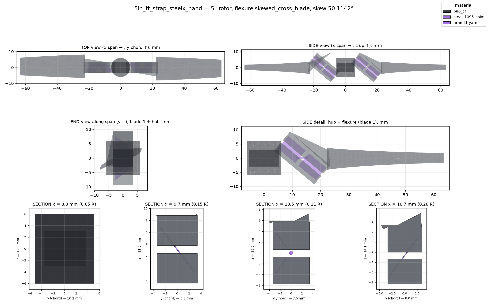


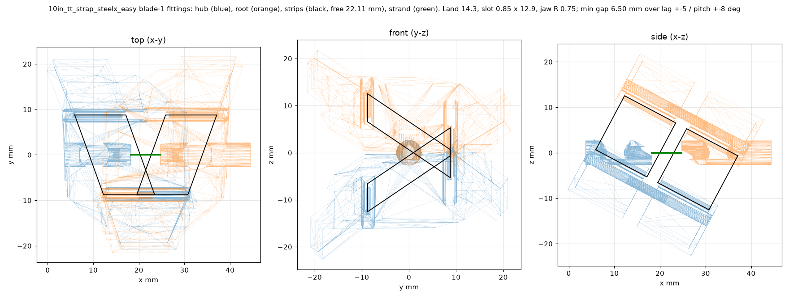

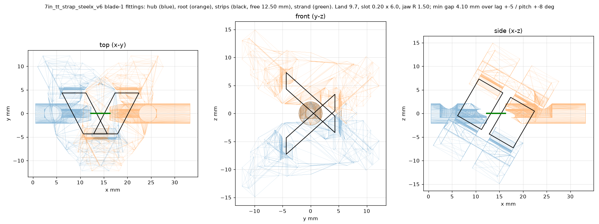


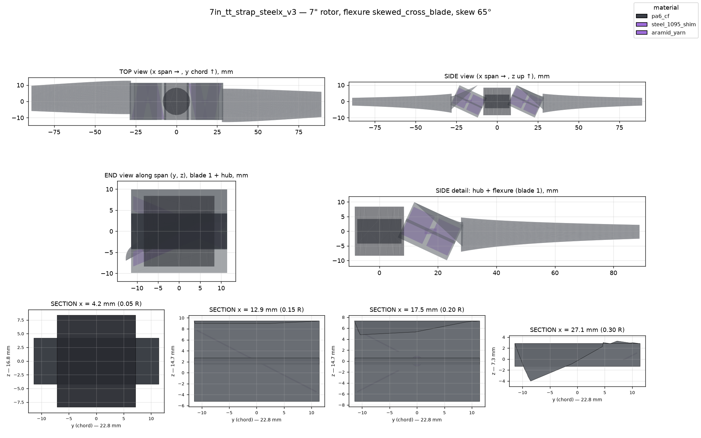

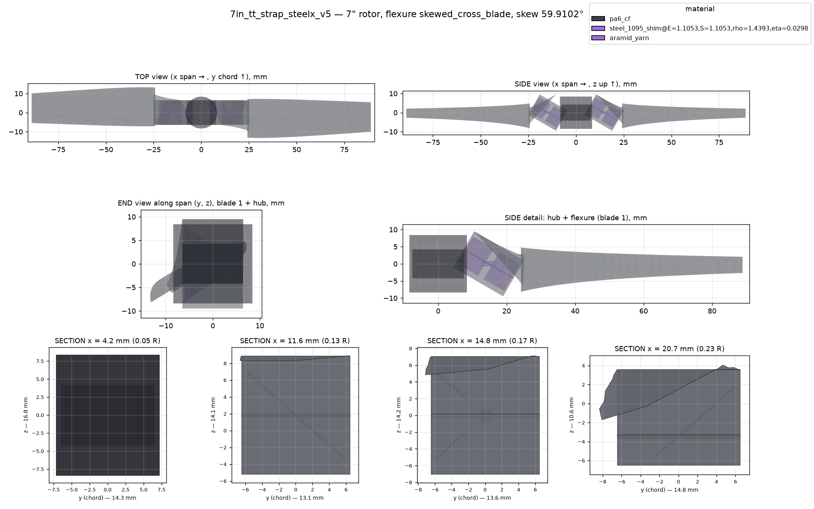

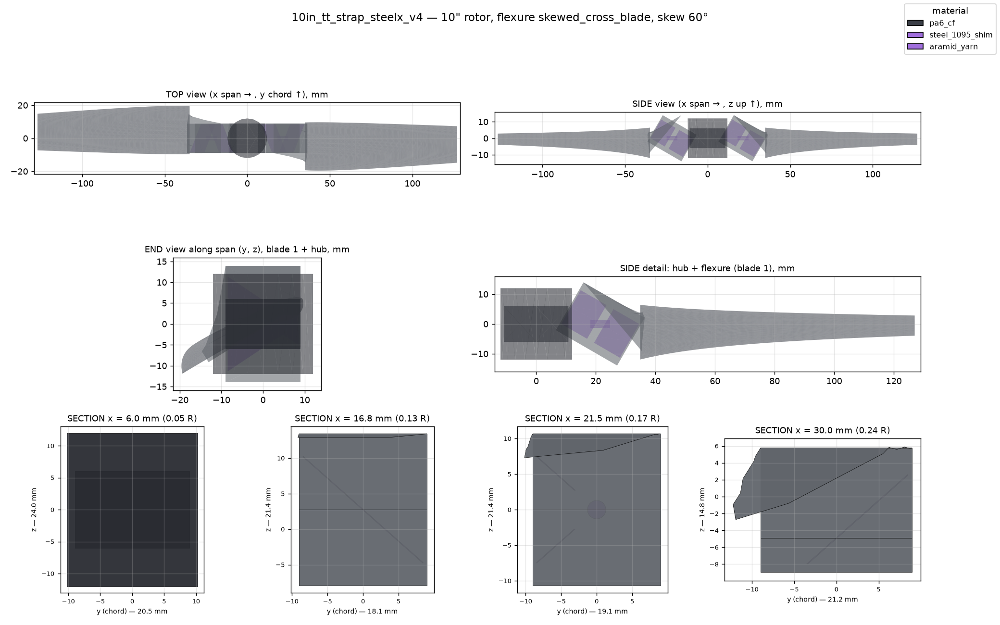

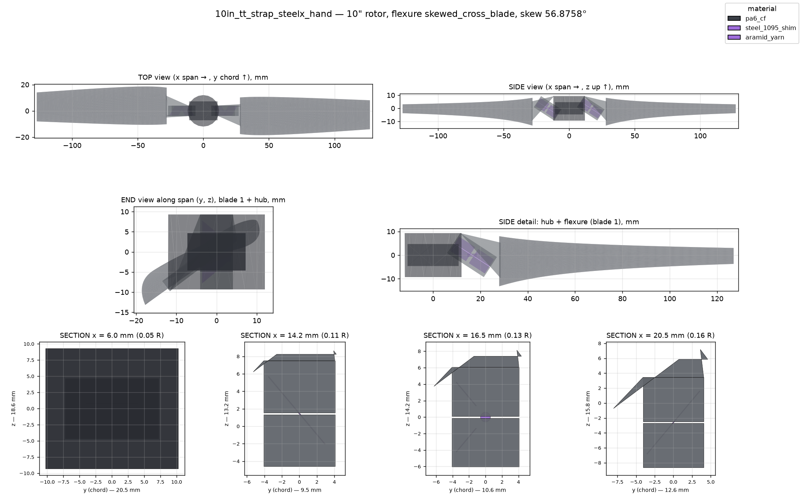


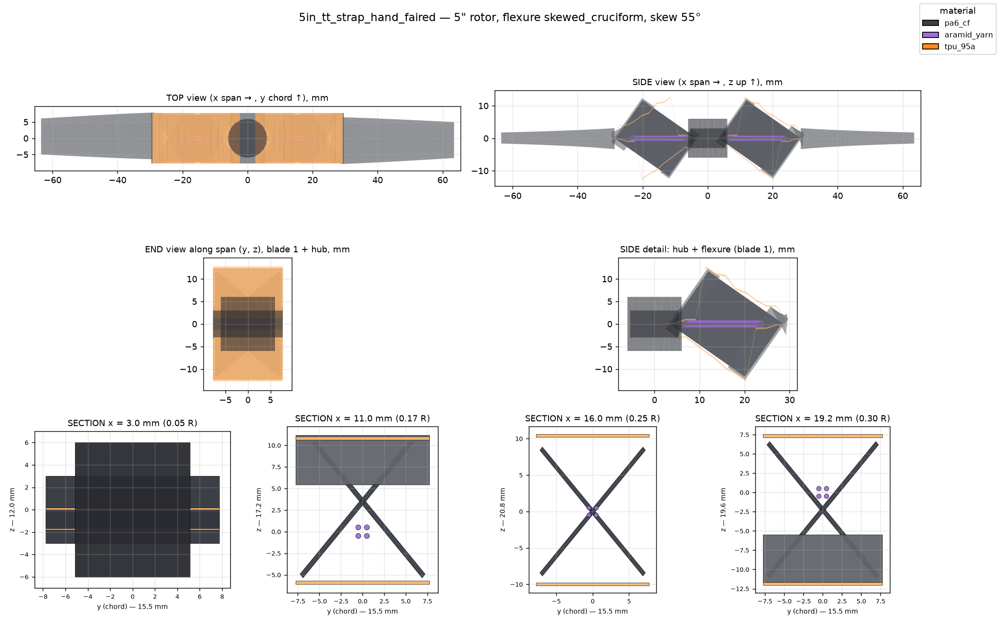

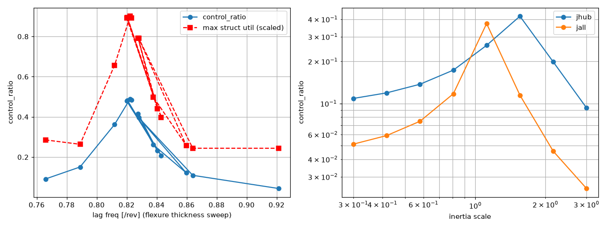

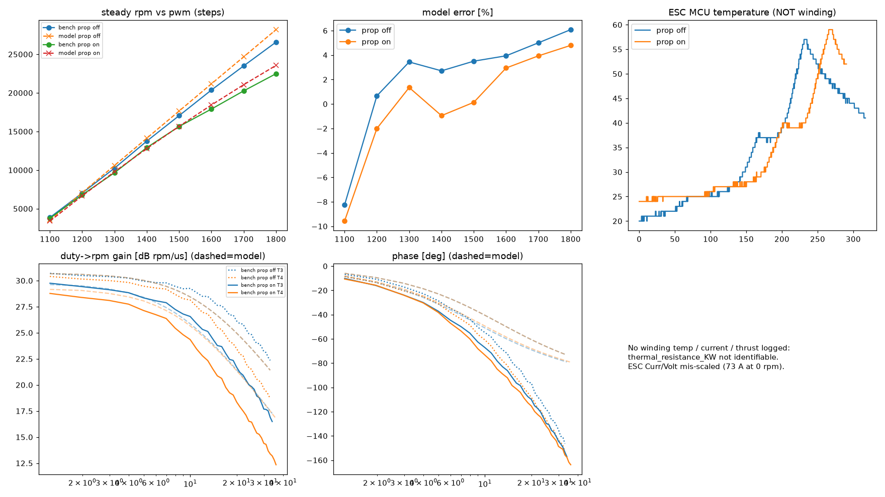

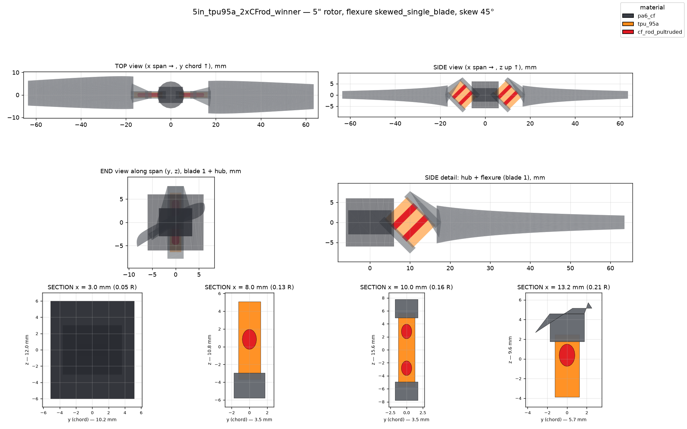


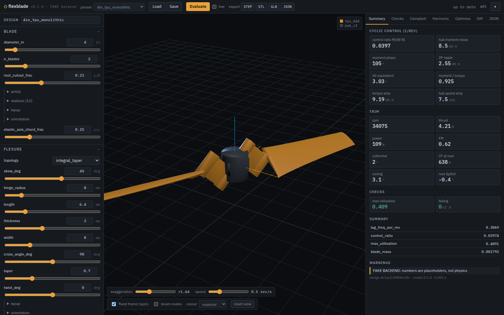

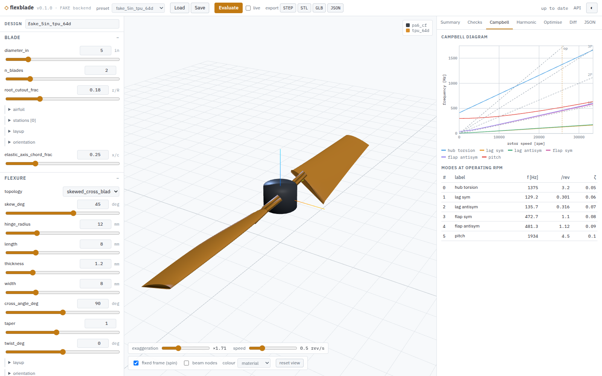

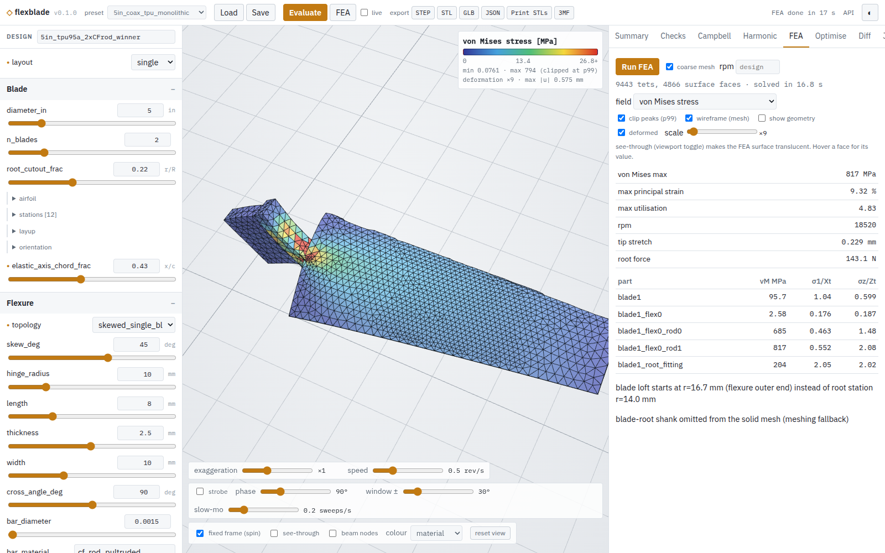
Generated 2026-11-22 from the repository logs. File: flexblade/study/recap/index.html; open from file:// (images are relative links into study/build, study/results, study/figures and flexblade/examples).